板金・自動車整備 編
整備の受付から納車まで、車両・部品・売掛金の管理を説明します。一覧やレコードの基本操作は共通編を参照してください。
この章の内容
1. 整備（受付〜納車）
日々の整備は「整備」ブックで管理します。ボード / リスト / カレンダーの3表示を右上で切り替えられます。
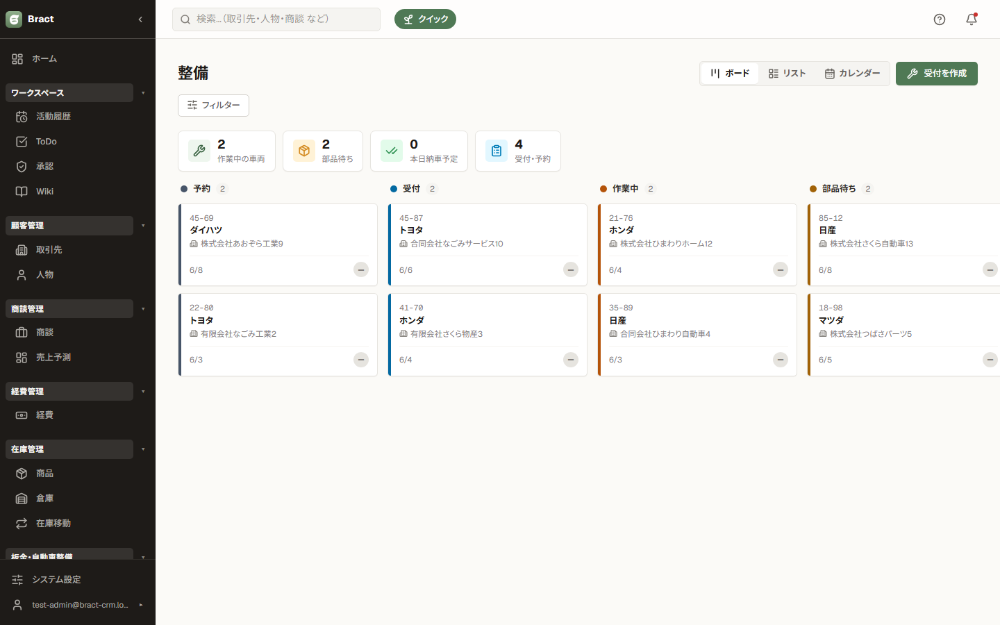
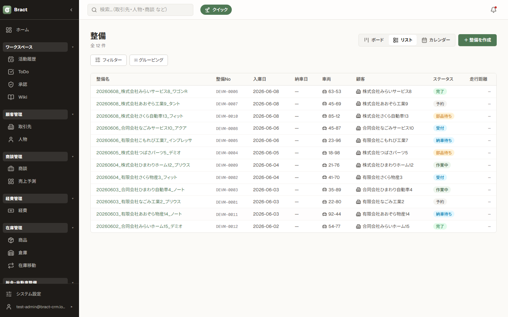
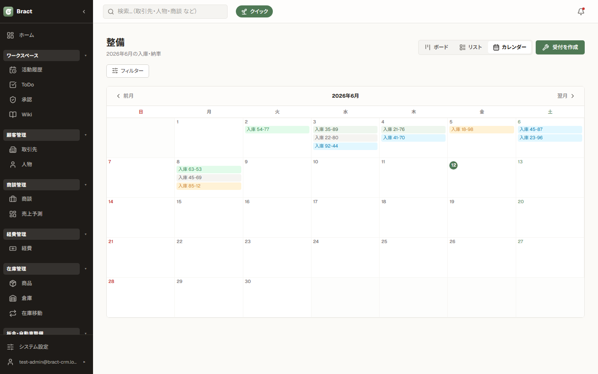
完了系の列は直近数ヶ月分のみ表示されます（管理者がシステム設定で期間を変更可）。過去分はリスト表示で確認してください。
2. 整備の詳細画面
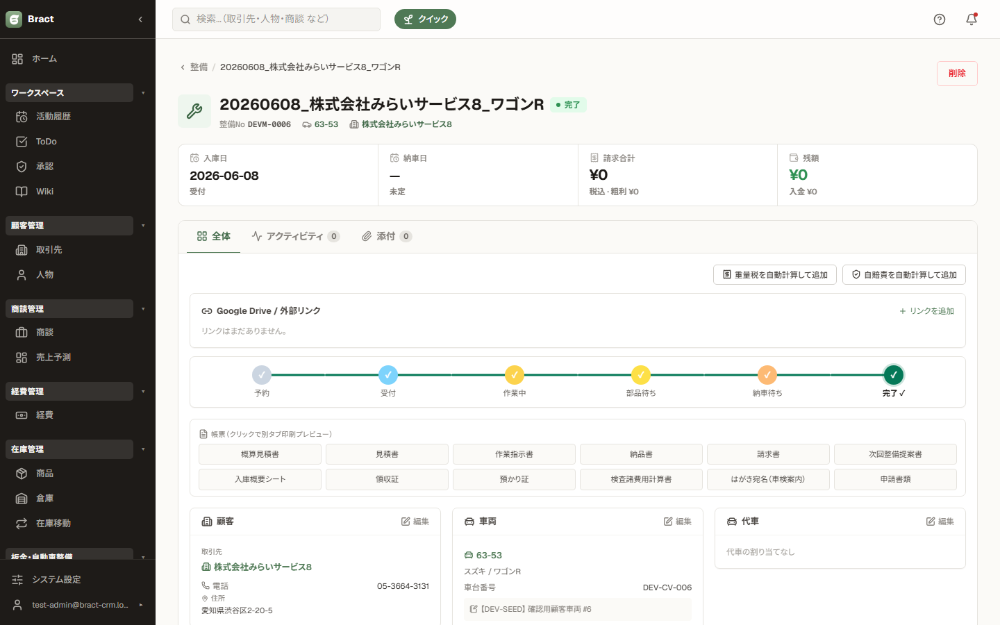
| 顧客 / 車両 / 代車 | 3枚のカードで受付情報を管理します。カードの 編集 を押すと入力欄に切り替わり、名前を入力すると既存データの検索候補が出て、無ければそのまま新規登録できます（顧客・車両を事前登録しておく必要はありません）。 |
|---|---|
| ステータス | 上部のステータスバーをクリックして「受付 → 作業中 → 完了…」と進めます。 |
| 作業明細・請求 | 作業内容と金額を明細で積み上げ、請求合計は上部の KPI に表示されます。 |
3. 受付の作成
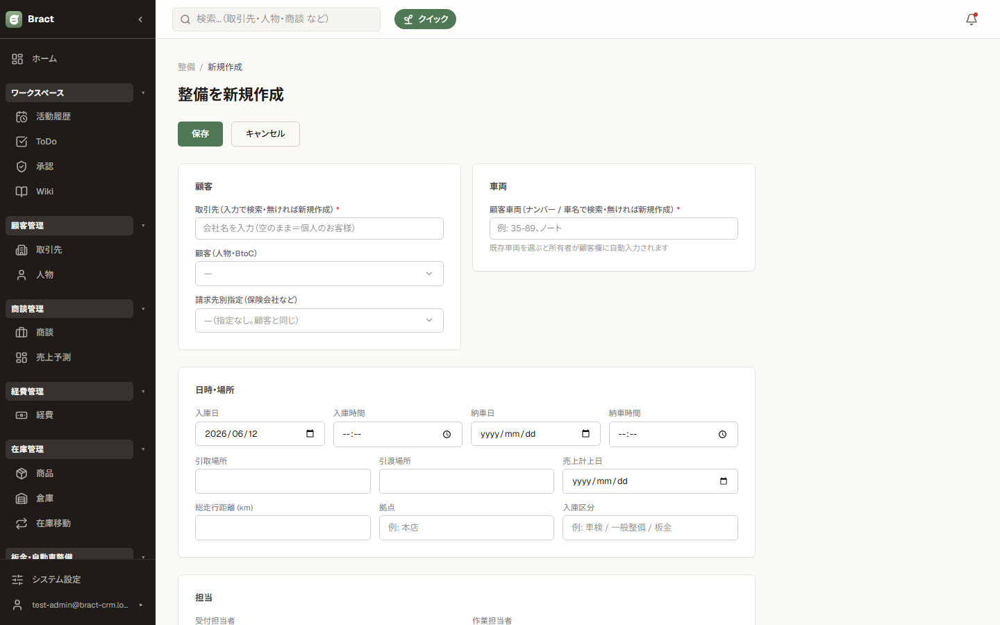
- 整備の一覧右上 受付を作成 を押します。
- 顧客名・車両を入力します。入力中に既存の候補が表示されるので、リピート客はそのまま選択、新規客はそのまま入力を続ければ自動で登録されます。
- 入庫日・納車予定日・作業内容を入れて保存します。
4. 顧客車両
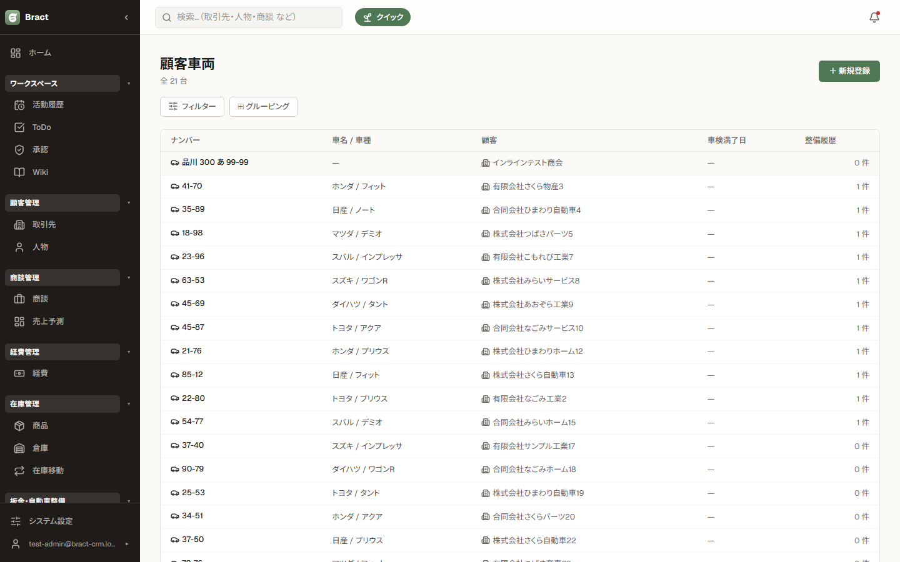
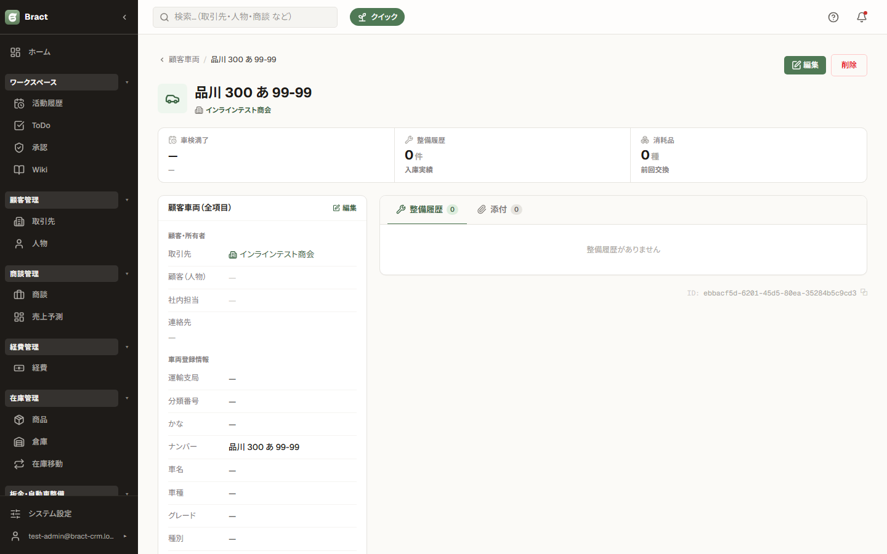
顧客車両は「どのお客様のどの車か」の台帳です。整備の受付と紐づくため、車両ごとの整備履歴が自動で蓄積されます。車検満了日を入れておくと案内のタイミングが分かります。
5. 在庫車両（販売用）
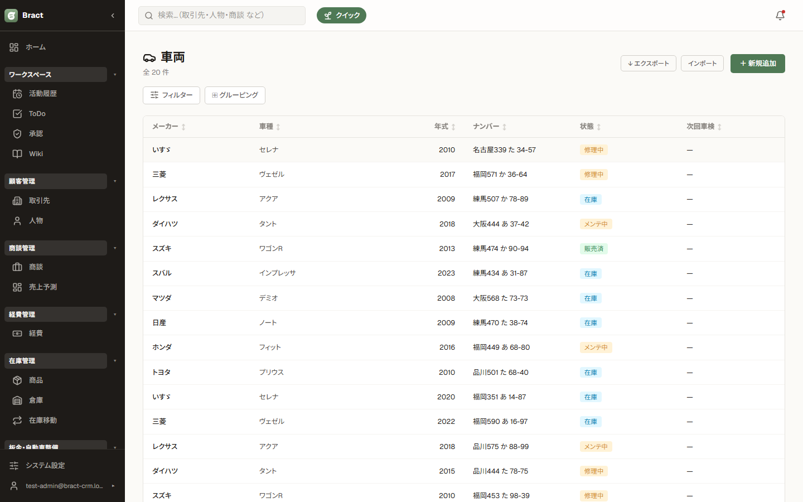
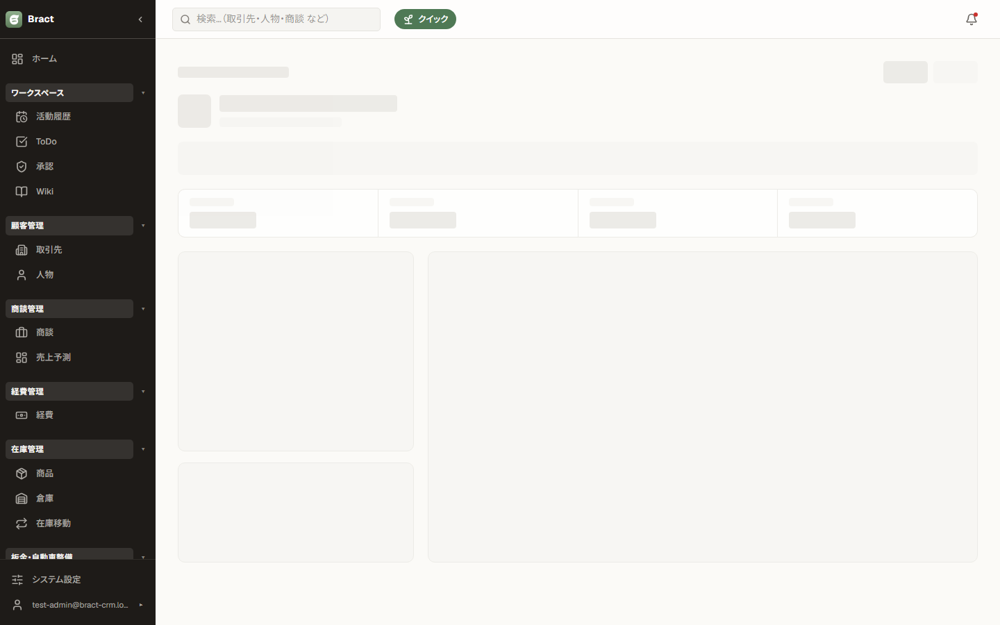
販売用の在庫車両です。仕入価格と販売価格を持ち、車両販売の商談と紐づけると利益計算に使われます（8章）。
6. 部品
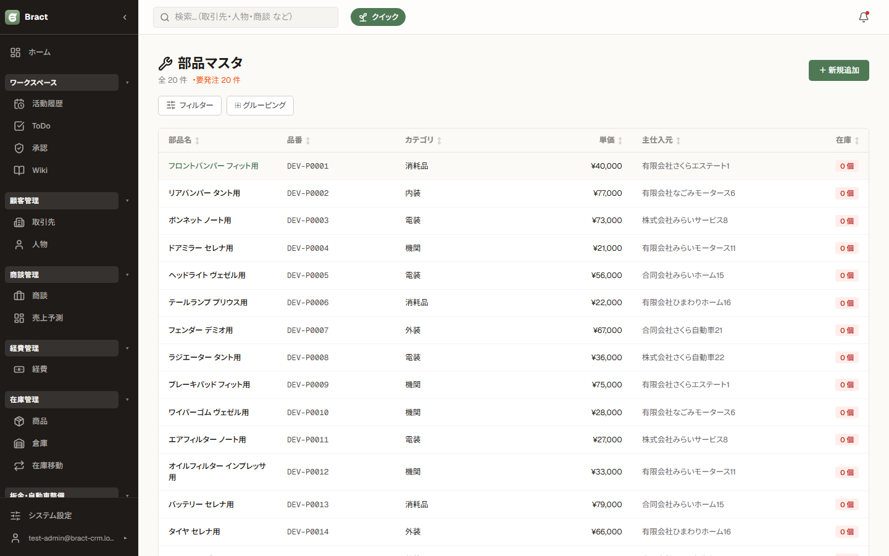
修理に使う部品の在庫台帳です。入庫・出庫（使用）を記録すると在庫数が自動計算されます。整備の作業明細から部品を使うと出庫が記録されます。
7. 売掛金
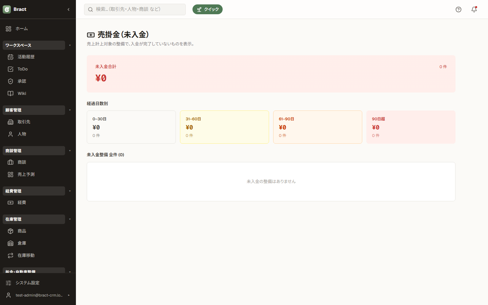
整備の請求から売掛金を管理します。未入金の一覧で回収漏れを確認し、入金があったら消し込みます。
8. 商談の整備情報
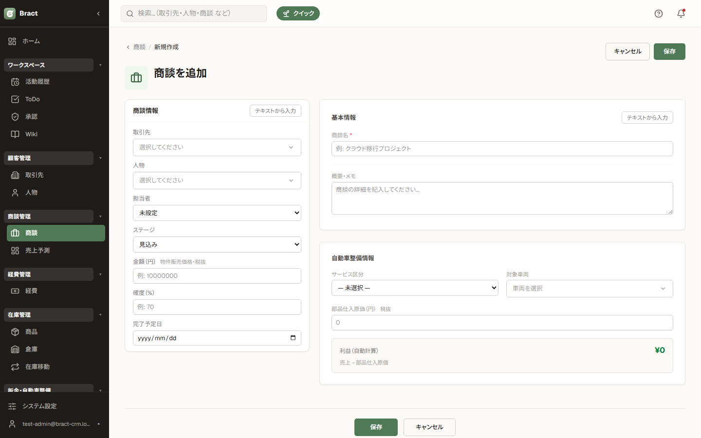
| サービス区分 | 車両販売 / 板金塗装 / 車検 などの区分。 |
|---|---|
| 対象車両 | 在庫車両から選択。「車両販売」で車両を選ぶと、部品仕入原価に車両の仕入価格が自動で入ります。 |
| 利益（自動計算） | 売上金額 − 部品仕入原価 がその場で計算・表示されます。 |